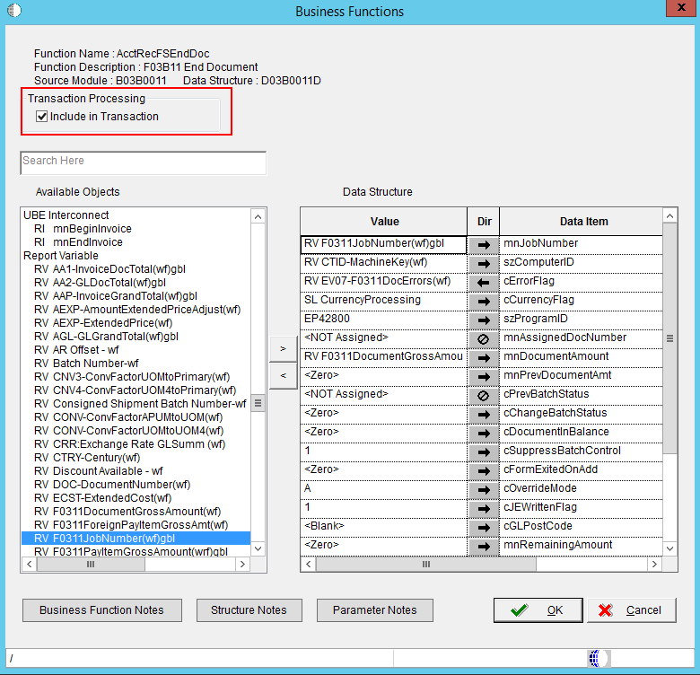

This document is describes how Transaction Processing is implemented in EnterpriseOne Batch Application using Transaction Processing System Functions like Begin Transaction, Commit Transaction and Rollback Transaction.
EnterpriseOne uses the following systems functions for transaction processing in batch application:
Call the Begin Transaction system function to start a manual transaction. Calling this system function initiates the beginning of the table updates that are part of the transaction. This system function has one MathNumeric type parameter named Transaction ID. You can use a Report Level Math Numeric variable to pass into the Transaction ID parameter. Even though you must pass in a value for Transaction ID, the value is not currently used by the system. This is because at any one time, only one transaction can be started from Event Rules.
After calling the "Begin Transaction" system function, the report can use Table I/O statements or in most standard E1 batch applications which use Master Business Functions (MBF) to conduct database table operations through cache usage. Please see <Document 1265902.1> - E1: BSFN: Master Business Function in EnterpriseOne.
To include any Table I/O statements in the current transaction:

To include Business Function call in current transaction, select the "Include in Transaction" checkbox on the business function call.

Call the Commit Transaction system function to commit all the database operations started since the Begin Transaction call. Similar to Begin Transaction, this system function takes in a Transaction ID parameter. You can use the same variable as the one used in Begin Transaction system function.
EnterpriseOne will commit all database operations started between the Begin Transaction call and the Commit Transaction call. If the Commit Transaction fails, EnterpriseOne automatically rolls back the database operations so that none of the database operations will be committed. There is no need for Event Rules (ER) to call Rollback Transaction after Commit Transaction.
You need to carefully define the location of the Begin Transaction and Commit Transaction calls. The transaction boundary must be just big enough to include all relevant database operations and not too large that it blocks other code from accessing the same database records.
The following example shows how to use transaction processing Commit Transaction system function through Event Rules:
Call this system function to cancel all the database operations started since the Begin Transaction. This system function takes a Math Numeric type parameter called Transaction ID. Use the same variable as used in Begin Transaction. EnterpriseOne will end the transaction without committing any database operations started between the Begin Transaction and Rollback Transaction calls. You should only use this system function when absolutely necessary.
The system variable "SV TP Commit Status" tells you the status of the Commit Transaction or Rollback Transaction call. It may contain one of the four valid values:
| Valid Values | Description |
| CO TP_ACTION_FAIL | If SV TP Commit Status is equal to CO TP_ACTION_FAIL, then the last transaction action has failed. The last transaction action can be either Commit Transaction or Rollback Transaction. If the last transaction is Commit Transaction then the Commit Transaction has failed and no database operation has been committed. If the last transaction is Rollback Transaction, then the rollback operation has failed. No database records have been committed. |
| CO TP_ACTION_SUCCESS | If SV TP Commit Status is equal to CO TP_ACTION_SUCCESS, then the last transaction action has succeeded. The last transaction action can be either Commit Transaction or Rollback Transaction. If the last transaction is Commit Transaction, then the commit has succeeded and all database operations have been committed. If the last transaction is Rollback Transaction, then the rollback operation has succeeded. |
| CO TP_IN_TRANSACTION | If SV TP Commit Status is equal to CO TP_IN_TRANSACTION, then the transaction has been started, but no Commit Transaction or Rollback Transaction system function has been called yet. |
| CO TP_NO_TRANSACTION | If SV TP Commit Status is equal to CO TP_NO_TRANSACTION, then the no transaction has not been started or completed by the Transaction Processing system functions. |
Event Rules Sample Using System Variable TP_Commit_Status
To enable Transaction Processing:

The following shows you a typical implementation of Transaction Processing in E1 standard batch applications.
If SV Error_Status is equal to CO SUCCESS
Commit Transaction(VA sec_TransactionID_TCID)
Else
Rollback Transaction(VA sec_TransactionID_TCID)
End If
Note: